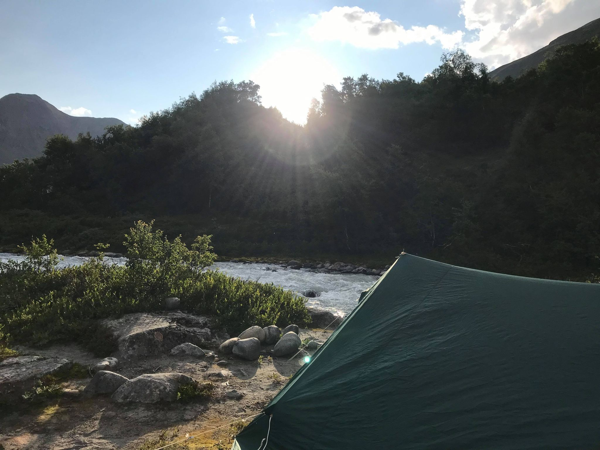

Telttur

Dette bildet er fra en telttur i Jotunheimen i sommer.
Elva i bakgrunnen er fra en isbre lenger opp i dalen.
Turen var kjempefin og gikk over 5 dager.
Dette bildet er fra en telttur i Jotunheimen i sommer.
Elva i bakgrunnen er fra en isbre lenger opp i dalen.
Turen var kjempefin og gikk over 5 dager.
Bilde av en gate i Oslo sentrum rett før gjenåpning.
Man kan se at folkene danser salsa og koser seg og savner livet før pandemien.
En vakker (og bråkete) kirke jeg gikk forbi i sommer.
Kirken vekker meg hver lørdag når den kaller inn til gudstjeneste,
og jeg blir like irritert hver gang.
Et basseng på Korsika som blir flittig brukt.
Strålende vær og karantenekrav er oppsummerende for denne ferien.
Nasjonalromantiske Besseggen i strålende vær.
Angrepet av høydeskrekk og slitne i beina nådde vi toppen.
Vannhenting i et lite vann på vei opp mot Besseggen.
Denne natten ble vi vekket av reinsdyr som gikk rett forbi teltet.